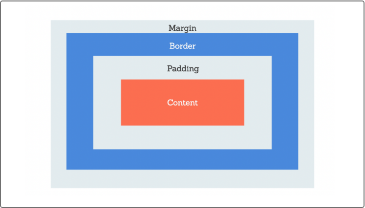
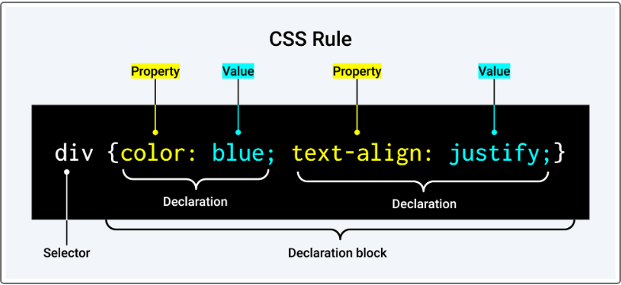

Prework Study Guide

HTML
- The head element conatins information about the webpage, and is not visible to the user
- The !DOCTYPE is a declaration that tells the browser what document type it should expect when it is opened
- The html element represents the start of the HTML document
- The head element contains metadata that helps the browser render the webpage correctly. Within this element you can use meta tags like: title, style, base, link, meta, and script
- The title meta tag defines the title for the webpage. It is required and VERY important for Search Engine Optimization
- The style meta tag defines the CSS styles associated with the webpage
- The base meta tag defines the base URL for the website
- The link meta tag connects and external source to the HTML document
- The script meta tag embeds client side scripts in the html document
- The meta meta tag defines metadata such as character set (charset), description, keywords, authors, viewport (sets default view of the webpage) (contains all of the info about the webpage used by the browser
- The body element represents the visible content shown to the user
- When working with cvisible html elements, the content is contained between opening and closing tags (the closing tag is indicated by the forward slash, ex. /head)
- An element refers to the the entire element, a tag refers to what is between the angle brackets
- h1-h6 elements represent the level of heading a given text block has. h1 being the largest and h6 being the smallest. These should always be used in order, and h1 should only be used once per page
- The p element represents a paragraph or block of text
- The ul element represents and unordered list (will show up as bullet points)
- The ol element represents and ordered list (will show up as numbered list)
- The li element represents the items in a list
- The img element contains info about images displayed on the webpage. The img element can contain attributes. For example scr, which defines the location of the image, and alt, which contains a text string that describes the appearance and function of an image.
- The br element creates a line of empty space, or a line break, between blocks of text
- The a (anchor) element creates links to the same or other webpages. The href attribute points tot eh URL for the link
- The section elements are semantic elements that define a section in a document
- The main element represents the dominant content of the body element
- The footer element appears at the bottome of the page and usually contains author, copyright, contact, sitemap, and navigation of the website
li>The link element creates a connection to the external file
- The link element creates a connection to the external file
- The rel attribute specifies the relationship between the current document and the linked document
- The href attribute specifies the location (URL) of the external file. This attribute uses relative pathing (uses pathing to the external file based on the location of the current file)
CSS
- A margin indicates how much space we want around the outside of an element. The margin indicates the space above and below the element. The auto value assigns the same margin value to the left and right sides
- A padding indicates how much space we want around the content inside an element.

- CSS class rule:

- The selector defines the elements or attributes we want the declarations to apply to
- The delcaration contains 2 components. The property we want to apply (ex. color) and the value for that property (ex. blue)
- If we want to aply a rule to all the visible elements on a page, the * symbol is used
- You can combine multiple selectors into a single CSS rule by using a comma
- he img selector assigns property values to any image in the markup
- When the display property is assigned with the block value, this makes it so each image is started on a new line
- We place the link to our style sheet in the head element section because that is where the metadata info goes
- if a period is placed before the selector name it designates the selector as a class selector. Any HTML element assigned to this class will gain property assignments from the CSS
- The box-shadow property adds shadow effects around the element's frame. Thius property is explained by x and y offsets. The x offset defines the width of the shadow on the x axis (or to the right of the box).The y offset defines the width of the shadow on the y axis (or below the box)
Git
- git pull origin main: pulls the main branch data from the remote repo in GitHub to the local environment on your PC. It makes sure that you local environment is synced with the GttHub repository. This command should be used before making changes to the main branch and after commiting changes to the working branch
- git status: checks what branch we are currently on
- git checkout "branch name": used to switch between branches
- git checkout -b branch-name: creates a new branch and switches to it
- git add -A: adds the modifications you made to the staging area (the staging area informs Git that the changes that have been made will be added in the next commit). The -A indicates that we want to add all of the modifications to the staging area.
- git commit -m: commits the staged content as a new commit snapshot. The -m indicates a message that will describe the changes that were made in the commit. Message must be in quotations
- git push origin "name of working branch": pushes all of the changes to the remote repository to await merging to main branch
Javascript
- Enter you Javascript notes here